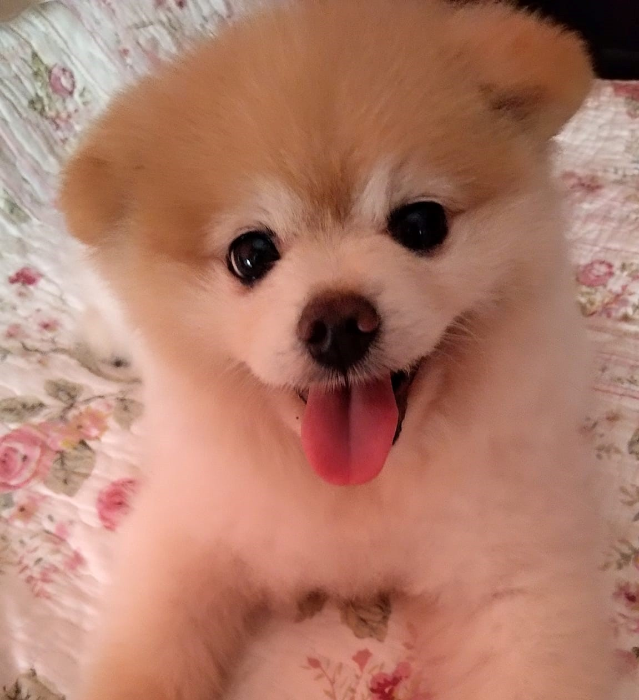
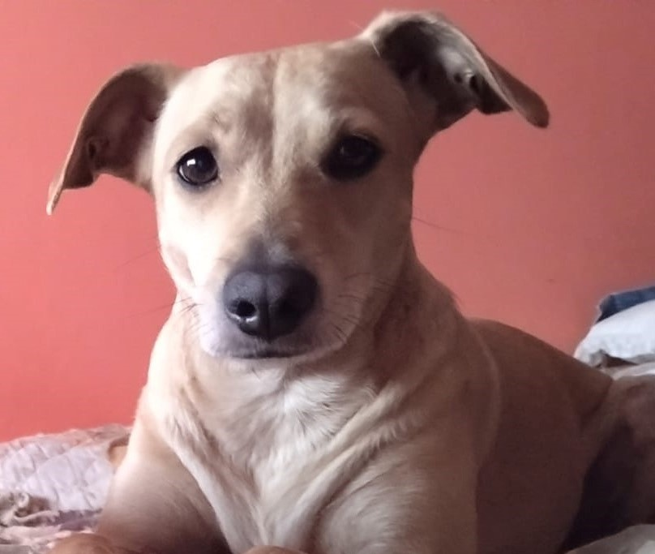
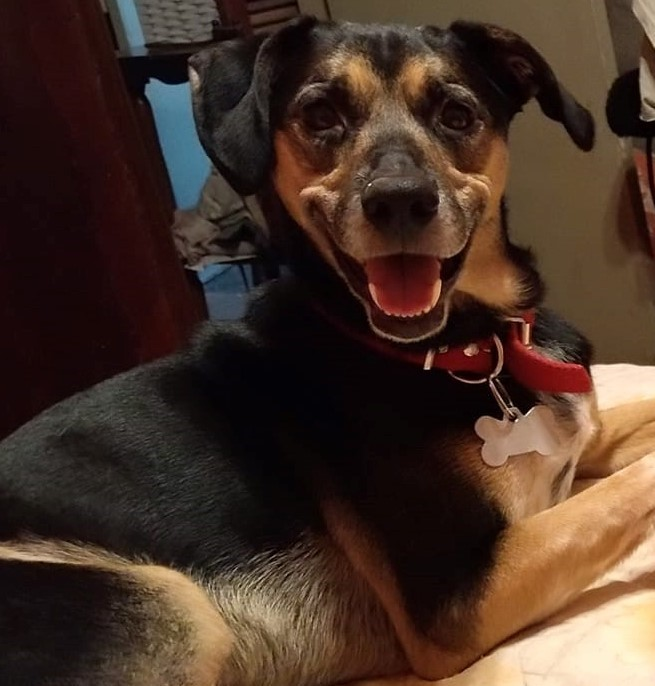

Precentaciones

Tomy
Perrito Perdido
Canino macho de 8 años, raza pomeranian, perdido el 21/04/2023 Perdido en Zona Norte, Munro.

Dumby
Perrito Perdido
Canino hembra de 13 años, raza mestizo, perdida el 1/01/2023 Perdido en Zona Norte, Florida.
Mora
Perrito Perdido
Canino hembra de 8 años, raza mestiza, perdida el 21/04/2022 Perdido en Zona Norte, Munro.

Mia
Perrito Perdido
Canino hembra de 4 años, raza mestiza, perdido el 21/02/2023 Perdido en Zona Norte, Munro.

Zack
Perrito Perdido
Canino macho de 8 años, raza mestizo, perdido el 5/03/2023 Perdido en Zona Norte, Munro.